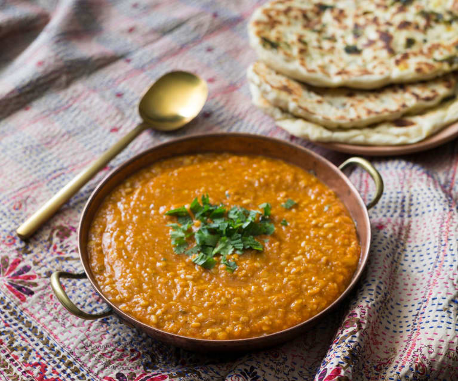

Cauliflower dahl

Description
This is a recipe from one of my vegan friends. It's a very
nutritious meal that can be done quickly with a bit of practice
and multitasking skills.
Ingredients
- Half a cauliflower
- 1 cup of red lentils
- 1 onion
- Vegetable oil
- 1 teaspoon of curry spice
- 1 teaspoon of ground cumin
- 1/2 teaspoon of cumin
- 200 ml of coconut milk (1/2 can)
Steps
- Grate the cauliflower and put it in a separate bowl.
- Cook the lentils in a large pot. You need one and a half
cup of water for one cup of lentils. Cook them until they
absorb the water.
- While the lentils are cooking, dice the onion and warm it up
on a pan.
- Put the grated cauliflower on the pan, together with the spices
and stir.
- When everything is done, put the cauliflower in the pot with lentils.
- Add the coconut milk and mix everything together.
And here you go. This is the most complicated recipe out of the ones I posted. It is not
really possible to mess it up, though. At worst, the kitchen might look a little messy after you're done.
Back to the list of recipes